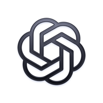
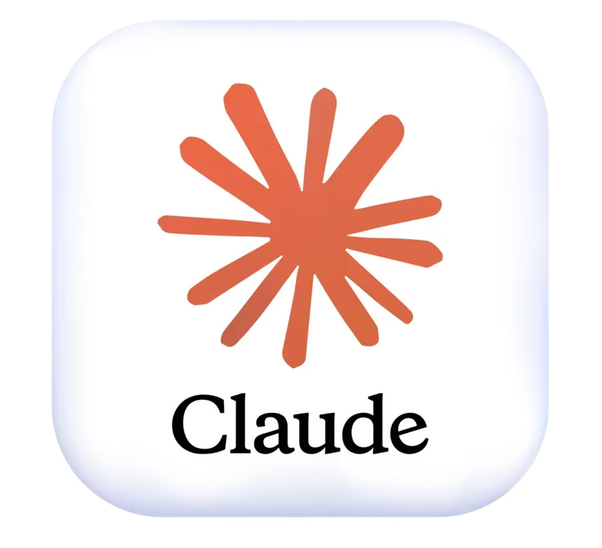

What is a LLM?
LLM is an acronym for Large Language Model. It is an AI model which is trained on huge amount of texts and data to be able to interact with us. With this, I mean that it's a model which is capable of understading and responding to human languages in that language itself. It is also quiet interesting to note that it works on the principle of neural network architecture called Transformer. There is an important step of tokenization where not the whole sentence but its keywords are noted. Transformer in itself connect the dots i.e. helps connect the things while talking to a user. Now, there's not much I know about its backend but for this blog, I need to keep typing and typing though I would be continuing the thing from its day to day usage and helps it provide us to solve our any kind of problems whether its a homework, assignment, a phone bug, a personal issue, or anything, literallyyy anything.
Role of LLM in our Day-to-Day Lives -
LLMs play a very important role in our day-to-day lives. From asking doubts related to our studies to solving coding problems, they help us in many different ways. For example, as a student, I can use them to understand difficult topics, complete my assignments, debug errors in my code, and learn new things. Apart from studies, they can also help us in writing emails, generating ideas, planning our daily tasks, and even dealing with some personal problems. The best thing about these models is that we can interact with them just like we talk to another person and get responses according to our needs. However, we should also keep in mind that they are not always correct, so we need to verify important information instead of blindly trusting everything they say. Personally, I find it very helpful in my everyday life, even the person who is here reading this, must also be there regularly using LLMs for any query. Since, the boundary isn't limited, it makes a connection with humans and often make them addicted to it. Whether in a positive or negative way - that completely depends on the particular individual.
Examples of LLMs with links to follow up -
- ChatGPT
- Gemini
- Claude, and many more...
- ChatGPT by OpenAI
- Gemini by Google
- Claude by Anthropic

